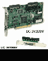

|
|
| 当前位置：电脑报电子版 > 1999 年 > 47 期 > 硬件周刊 > 另眼相看——SCSI接口卡 |
| 《 另眼相看——SCSI接口卡 》 |
| SCSI（Small Computer System Interface，小型计算机系统界面）是一种应用于高档计算机或服务器的接口方式。现在随着CPU速度的不断提升，对于PC整体性能的要求也越来越高，不少用户都选择了SCSI设备。由于普通的PC机添加此类设备时必须加装SCSI接口卡，这个时候常常会遇到如何选择SCSI接口卡的问题；而且有时候一些使用者误认为只要是SCSI接口卡，买来用就可以了，结果多花了金钱，并不能提升系统的性能，因而正确合理的选择SCSI接口卡显得尤为重要。
一、SCSI接口卡的特点 1.符合标准的规格。由于SCSI接口的产品最初定位于较大型的电脑上，因而在标准制订时就预先设计了相当详细的规范，包括接头的大小、接口针脚数、系统总线的宽度、数据的传输方式以及控制命令等，因而相对其他接口方式能够有效地降低设备之间的冲突。由于完全的标准规范，第三方厂商为了完全发挥SCSI接口的性能，又必须将产品的设计做得更好，这样又势必造成SCSI接口的产品价格升高。因而SCSI接口产品价格与IDE接口产品之间巨大的价差也就不难理解了。2．广泛的支持能力。SCSI卡的设计并不像IDE接口那样，只是应用于硬盘或兼容的ATAPI设备。由于SCSI卡支持不同的周边设备所使用的指令集，因而能够提供比其他数据传输接口更广泛的支持能力。除了通常可见的SCSI接口的硬盘或光驱外，SCSI卡还可以支持磁带机、抽取式硬盘、光盘刻录机、MO、扫描仪等。另外在SCSI卡的规格中，每一个通道都可以支持7～15个周边设备，充分发挥它的扩展功能。为了避免所有的设备都安装在机箱内部，SCSI卡除制订完全的内置式接口规范外，还包含了外接式接口的规范。 3．高速的数据传输率。在数据传输方面，SCSI卡应用了多工作进程、同步传输以及指令排序的技术，使周边设备能够最佳地运作，同时SCSI卡内建了控制芯片，能够自动监控数据的传输过程，处理器只要发出指令给SCSI控制芯片，由它执行数据传输功能就可以了，从而减轻系统占用率和处理器的负担。SCSI卡的多工作进程方式，能够在读取多项周边资料的时候，利用第一组命令所需资料显示送回的空档，继续对其他周边发出命令，有效地减少数据传输过程中的等待时间。在数据传输过程中，若周边设备回应时间慢，SCSI控制芯片还会自动中断该装置的连接，以避免因其发生故障，而导致整个系统崩溃的状况。 二、SCSI卡的选购要点 1．SCSI产品的定位。SCSI卡虽然具有非常不错的优点，但这是以付出更多的资金为代价的，而且SCSI接口带来的性能提升并不能够与之成正比，因而在选购之前应确定产品的定位。虽然目前SCSI接口的产品很丰富，但对于普通PC机而言，如果想追求快速、稳定和可靠的话，宜选择SCSI接口的刻录机、扫描仪等设备，而SCSI硬盘大家公认比现有的IDE硬盘要快得多，但价格上实在没有优势。2．SCSI卡的分类。SCSI卡发展到现在，共定义了四种规范，最早的SCSI－1接口的最大数据传输率仅为4MB/s，目前基本已被淘汰。SCSI－2也称为Fast－SCSI，最大数据传输率为10MB/s，支持16位的数据总线，允许连接15个周边设备，并能够进一步把传输率提高到20MB/s。而第三代的Ultra SCSI（也称SCSI－3）通过扩展总线宽度的方法，能够在16位的数据总线上达到40MB/s的数据传输率。Ultra2 SCSI则是目前应用最为广泛的高档SCSI接口，它采用双通道方式提高整体性能，在16位的总线下可达到80MB/s的数据传输率。最新的SCSI接口规格已升级到Ultra 160/m，支持16位数据总线，最高数据传输率可达到160MB/s。从上面的分类可以看到，在选择时宜采用符合后三种规范的接口卡，以获得最佳的兼容性和扩展性。 3．SCSI卡的接头。SCSI卡上的接头大致分为内接和外接两种，在PC机上常用的内置式SCSI卡接头根据数据线的排列分为50芯、68芯和80芯三种，其中68芯根据信号的不同又分为SE和LVD两种，SE信号用的排线和普通排线方式相同，但宽度较窄；LVD排线则在两个信号接头之间，将线材以绞的方式加以编织以减少杂波干扰。而80芯接头的产品现在所见还不多，有待进一步普及。 外接式数据线的接头有25芯、高密度50芯和高密度68芯三种。其中25芯的SCSI接头与并行口是相同的，常用在SCSI接口的扫描仪或其他较低速的周边设备上。现在常见的外置SCSI接口产品多采用高密度50芯线连接。高密度68芯针状接头是Ultra SCSI传输模式以上所使用的外接接头，目前市场也并不多见，但由于它和最新的Ultra 160/m兼容，因此会渐渐成为市场的主流。 三、主流SCSI接口卡评述 1．高端产品。高端产品一般定位在高档服务器上，性能和价格都是高高在上，主要生产厂家有Adaptec、艾葳（Iwill）、建邦（tekram）等。Adaptec AHA－2940U2W。Adaptec是SCSI标准的开创者之一，因而其产品具有最高的权威性。AHA－2940U2W采用Adaptec自行研制的控制芯片，最高数据传输率80MB/s，支持SCSI光驱开机功能，内建信号分支芯片，可同时使用多个接头，最多可连接15个周边设备，在最新的Windows98 SE中直接内置了驱动程序，安装非常方便。这款2940U2W价格在3500元左右。另一款AHA－2940UW Pro最大数据传输率为40MB/s，价格在2500元左右。 艾葳SIDE－2935LVD。采用Initio芯片，最高数据传输率达到80MB/s，支持SCSI光驱开机功能。但卡上只提供两种接头，如果接头和设备不同时就必须自己安装转接头才能使用，最多可同时连接15个周边设备，价格在1100元左右。  建邦DC－390U2W。采用Symbios芯片，最高数据传输率为80MB/s，支持SCSI光驱开机和SCAM功能，内建信号分支芯片，可同时使用多个接头。在Windows98 SE版本也内建驱动程序，可方便安装。最多可连接15个周边设备，不过和艾葳的产品一样只有两个接头，扩充性稍差。价格在2000元左右。 2．普通产品。对个人PC用户来说，普通产品更适合选择，而国内所见的产品也多为艾葳或建邦公司的产品。 艾葳SIDE－2935UW。采用Initio芯片，最高数据传输率为40MB/s，支持SCSI光驱开机，Windows98 SE中内建驱动程序，最多可连接15个周边设备，但只提供两个接头，价格在700元左右。SIDE－2930U＋，采用Advansys芯片，最高数据传输率为20MB/s，最多连接7个周边设备，价格在500元左右。SIDE－2930C，采用Advansys芯片，最高数据传输率为 10MB/s，针对传输速度较低的SCSI设备设计，可连接7个周边设备，价格在350元左右。 建邦DC－390U。采用Symbios芯片，最高数据传输率为40MB/s，支持SCSI光驱开机和SCAM功能，最多可连接7个设备，但只提供两种接头。在Windows98 SE中虽内建了驱动程序，但不如随卡自带的驱动程序。价格在550元左右。DC－395UW采用建邦自行开发的Tekram芯片，最高数据传输率40MB/s，最多可连接15个周边设备，也只能同时使用两种接头。DC－390则采用AMD芯片，最高数据传输率为10MB/s，最多可连接7个设备，为入门级产品，价格400元左右。 （江西 刘炜） |
| 下载本期推荐软件 | 页 首 |
| 《电脑报》版权所有，电脑报网站编辑部设计制作发布 |